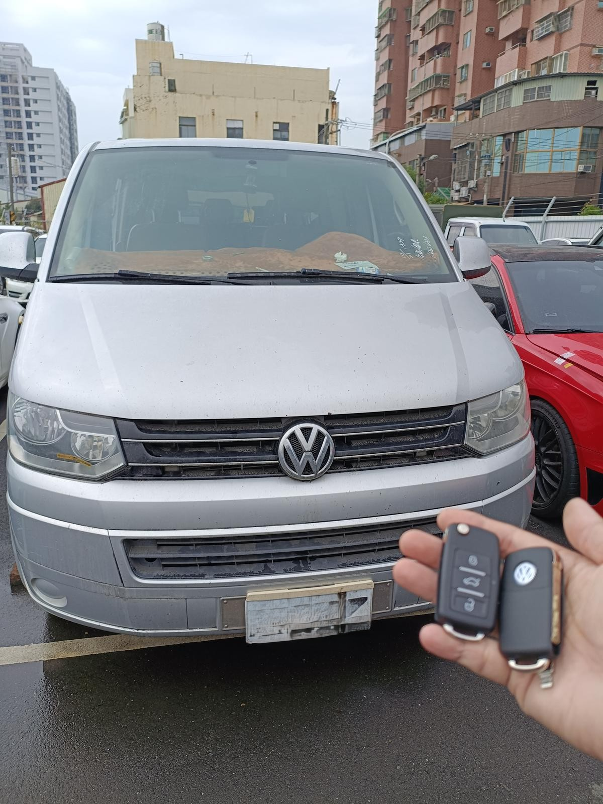

極致核心行動工作站：配備原廠級解碼設備，隨時出擊
當您面臨「所有鑰匙都不見了」的困境，傳統原廠往往要求您將車輛拖回服務廠，且需經歷漫長的訂貨期與高昂的拖吊費。極致核心 ProCore Auto Key 改變了這個規則，我們透過先進的數位解碼技術，提供「現場救援、免拖吊、即刻完工」的解決方案，讓您在最短時間內找回啟動權限。
專業技術解構：為何極致核心是您的唯一選擇？
車輛端資料確認 底層資料重建
無需拆解車輛精密電腦模組，透過診斷接口直接讀取與匹配防盜協議，保護車輛完整性。
精密 CNC 齒痕復刻
根據鎖芯數據或原始編碼，現場復刻出與原廠精準度無異的實體鑰匙齒痕。
失效 ID 註銷鎖定
在同步新鑰匙的同時，註銷遺失舊鑰匙的數位權限，徹底杜絕車輛失竊風險。
原廠功能完整支援
支援 Keyless 免鑰匙進入、一鍵啟動及所有遙控功能，享有技術保固。
服務版圖覆蓋：深耕中彰，跨區支援竹苗雲嘉
為了確保車主在面臨危機時能獲得最即時的支援，我們建立了一套高效率的行動服務體系：
- 中彰投核心區：針對 台中市、彰化縣、南投縣 提供最高優先級的緊急救援服務。
- 跨區技術支援：技術範圍擴及 新竹、苗栗、雲林、嘉義。
- 免拖吊服務：行動工作車直接抵達現場，省去昂貴的跨縣市拖吊代價。
備份鑰匙策略：避免全丟的高昂代價
「數據是唯一的啟動憑證。」我們始終建議車主：在還有一支有效鑰匙時，提前製作備份。
● 預算最大化：備份鑰匙的成本僅為全丟救援的 1/3 甚至更低。
● 保護電腦：有鑰匙複製時，對車輛電子模組讀寫壓力最輕，安全性最高。
● 二手增值：具備完整兩支鑰匙，是車輛整備度良好的重要加分指標。